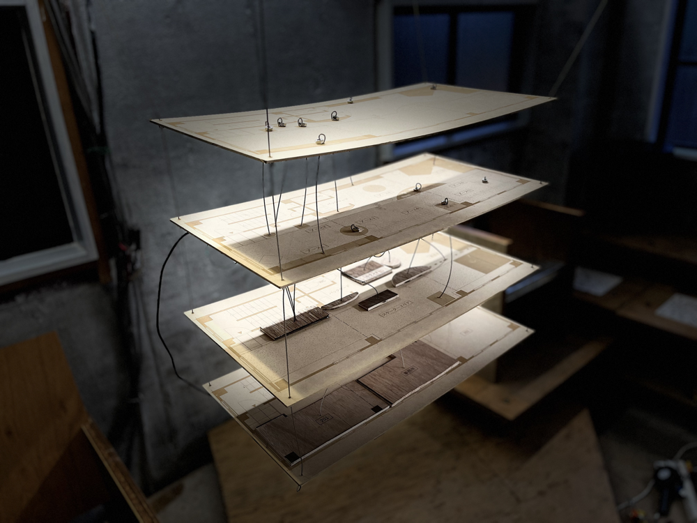
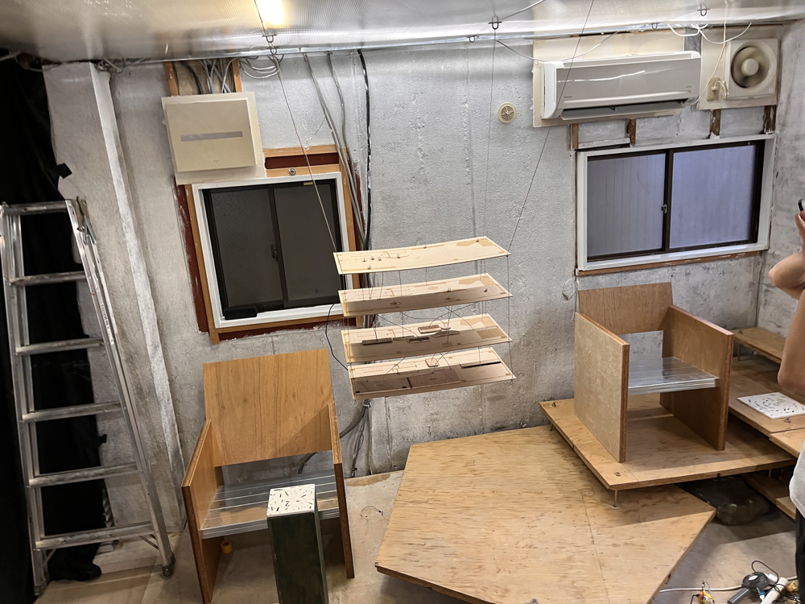
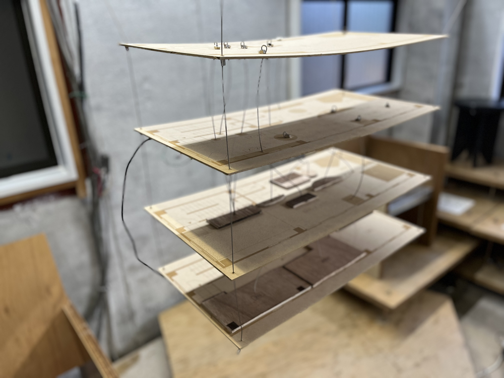

Conecting Past Spase
Technology
- esp32
- M5Stack
- M5stackC
- BLE通信
- タッチセンサー
- ソレノイド
物質はその姿を変えながら空間を循環していく。
アップサイクルとは、廃棄されるものに付加価値を与え、元の製品よりも高い価値を生み出す概念である。江東区のFILTER galleryでは、このアップサイクルをテーマに掲げ、前回の展示で使われた素材を次の展示に引き継ぎながら、廃棄物に新たな機能と価値を与えている。
ドアは机に、床は棚に変わり、空間を構成する要素は次の展示へと再び循環していく。
私はこの「物質の循環」を体験できる点に興味を持ち、本作品 Connecting Past Space を制作した。
過去に行われた展示の間取り図を層として重ね、各層の物体の位置をステンレスワイヤーで結んでいる。
ワイヤーに触れることで、空間内に設置されたソレノイドが叩かれ、現在の物体の“居場所”を音として伝える。最上層は現在の展示の間取り図であり、ワイヤーを辿ることで、かつてのその素材や用途を知ることができる。
現在は本棚や机として存在しているが、かつては床材だったり、ドアであったりすることがわかる。間取り図にはそれぞれの素材の一部を貼り付け、触覚的にも素材感を感じ取れるようにした。
インタラクションの検出にはESP32のタッチセンサを使用し、ESP-Now通信によってソレノイドを制御するM5StickCと連携している。
本作品は，明星大学オープンラボと建築デザインユニット「ShuHaRe:」と合同で行ったハッカソンにより制作・展示した．


